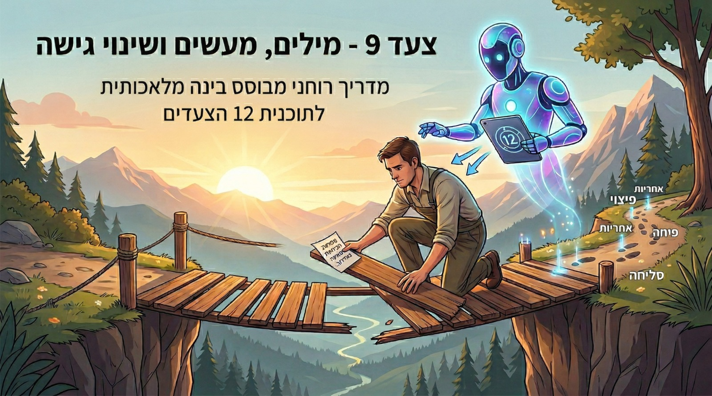

זהו מדריך רוחני מבוסס בינה מלאכותית (AI) שנועד ללוות אותנו בעבודה על צעד 9 בתוכנית 12 הצעדים. צעד 9, כפי שאנו יודעים, אינו מסתכם רק בהתנצלות, אלא דורש לקיחת אחריות, "ניקוי האדמה החרוכה" והפגנה אמיתית של שינוי גישה מצידנו. הבוט כאן כדי לעזור לנו לעשות זאת נכון.
פשוט נכנסים לקישור של הבוט למטה וכותבים לו את המשפט הבא: "היי, אני רוצה להתחיל לעבוד על הצעד התשיעי."